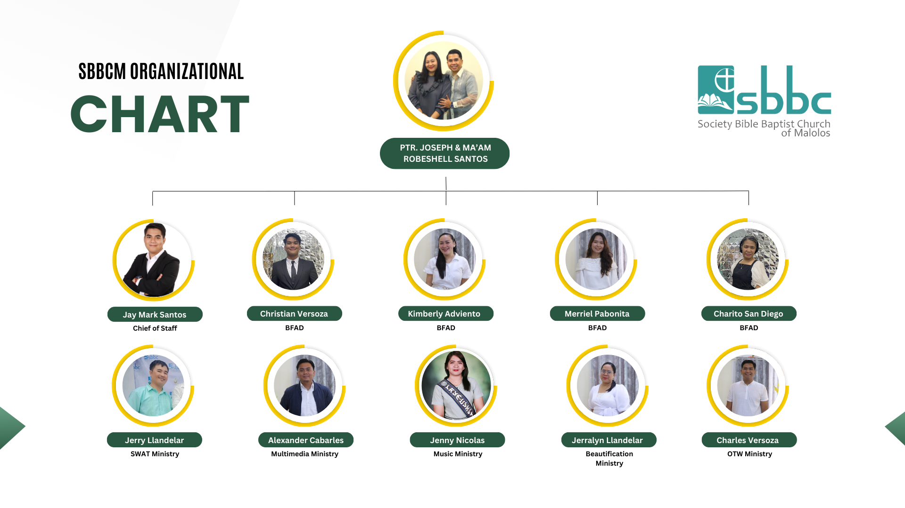

City of Malolos, Bulacan
Our beloved Pastor Joseph A. Santos
SBBC Malolos began as a mission work in Caniogan, where it faithfully served the community for six (6) years. Through God’s grace, dedication of church leaders, and the commitment of its members, the mission continued to grow spiritually and numerically. As the ministry expanded, the church was relocated to Canalate, where it was formally established as a local church. Since 2018, SBBC Malolos in Canalate has continued its mission and vision of proclaiming the Gospel, nurturing believers, and serving the community, remaining steadfast in faith and committed to God’s work.

You can read this in PDF form, Click the card to open the file
13: Ladies Fellowship
20: Men's Fellowship
26-27: Missions Conference
29: Missions Sunday
3: Siete Palabra
4: Beloved Pastor Joseph's Birthday
5: Pastor Joseph & Wife Wedding Anniversary
26: Pastor's Appreciation Sunday
3: Ministers' Sunday
5-8: Daily Vacation Bible School Hosts: Sis. Kim, Sis. Jerralyn, Sis. Jenny, Sis. Carmela, Sis. Marian
10: Mother's Sunday Hosts: Bro. Alex and all Unmarried / Young People
22: Ladies Fellowship
29: Men's Fellowship
31: Back to School Sunday Hosts: Brethren Abroad
TBA: YP Fellowship in the Afternoon